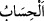

hususlar bunu göstermektedir.
“
”, muhâsebe anlamındadır. Muhâsebe ise yaptıklarının karşılığını görmesi için
kulun lehinde ve aleyhinde olan şeylerin ortaya konulmasıdır. İnsanların hesaplarının
yaklaşmasından maksad, kıyâmetin yaklaşmasının zımnında onun da yaklaşmasıdır.
Kıyâmet gününe “hesap günü” denilmesi, bir zamânı, içinde meydana gelen en önemli
ve kalblerde en çok tesir bırakan şey ile isimlendirmek kabilindendir. Çünkü hesab,
kişinin bütün hallerinin ortaya konulmasıdır. Şu halde hesabın yaklaşmasının anlamı,
uzak olduktan sonra yakın ve yaklaşmakta olmasıdır. Çünkü o, her saat insanlara bir
önceki saatten daha yakındır. Yine geçen zaman kalan zamandan daha çoktur. Bir hadiste
şöyle buyrulmuştur: “Geçmiş ümmetlere nisbetle sizin dünyada kalışınız, ikindi
namazı ile güneşin batımı arasındaki vakit kadardır.”[137]
Âyette insanların ne zaman hesaba çekileceği tâyin edilmemiştir. Çünkü ölüm zamânı
gibi onun da gizlenmesi daha uygundur.
Âyetin bu kısmının mânâsı şöyledir: “Cezâyı gerektiren kötü amellerinden ötürü
Allâh’ın Kureyş müşriklerini hesaba çekeceği vakit, yâni kıyâmet yaklaştı.”
Kâşifî bir başkasından naklen der ki: “Muâheze/azarlama zamânı yaklaştı. Bedir
gününde öldürülen ve esir edilenleri hatırla.”
Fakir (Bursevî) der ki: “Bana göre âyetin böyle tefsîri, en âşikâr olandır. Çünkü
kişinin ölümü, kıyâmeti ile bitişiktir. Mekke müşriklerinin katil ve benzeri şekillerde
cezalandırılmaları, kıyâmet ile hesâba çekilme vakitlerinin yaklaşması hükmündedir. Bu
ifâdenin benzeri, “Ölen kimsenin kıyâmeti kopmuş demektir”[138] hadîsidir.
“Hâl böyle iken onlar, gaflet içinde” îmandan, kendilerini gaflet uykusundan uyaran
âyetlerden ve îkazlardan “yüz çevirmektedirler.” Yâni, en küçük şeyden bile hesap
görecekleri hususunda ve onun için hazırlanma konusunda tam bir gaflet içindedirler.
Onlar, o günün geleceğini îtiraf ettikleri halde önemsemediklerinden değil, bilakis
akılları onu zarurî gördüğü halde inkâr edip kâfir olduklarından bütünüyle
unutmuşlardır. Akıl, kıyâmeti/hesâbı zarûrî görür. Çünkü amellerin mutlaka bir
karşılığının olması gerekir. Aksi takdirde itâat edenle isyan edenin eşit muâmele
görmesi lâzım gelirdi. Bu ise ilâhî hikmet ve adâletin gereğinden uzaktır.
Gaflet, aklı başında ve uyanık olmanın azlığından ileri gelen bir unutma/yanılmadır.
et-Te’vîlâtü’n-Necmiyye’de şöyle der: “Onların durumlarını bilen bir nasihatçi onlara
nasihat etse onlar, onun sözünü ve nasîhatini dinlemekten yüz çeviririler. Nitekim bir
âyette: “....Lâkin siz öğüt verenleri sevmiyorsunuz.” (el-A‘râf, 7/79) buyrulmuştur.”
Şeyh Sa‘di der ki:
Birisinin kafasında bir kuruntu varsa
Zannetme ki doğruyu bir an kabul eder
Bir şey öğrenmekten yorulur, öğütten utanır
Yağmur yağmakla taştan şakayık bitmez